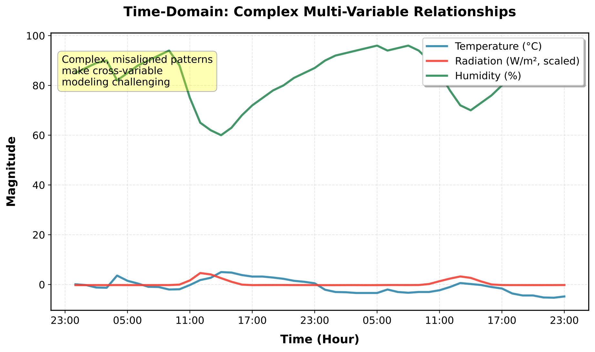
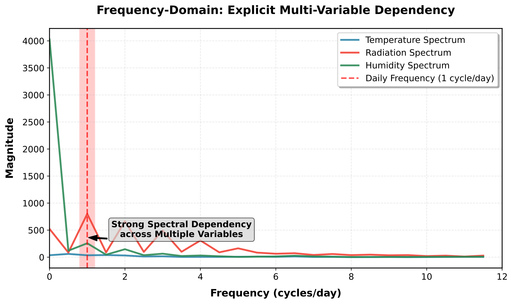
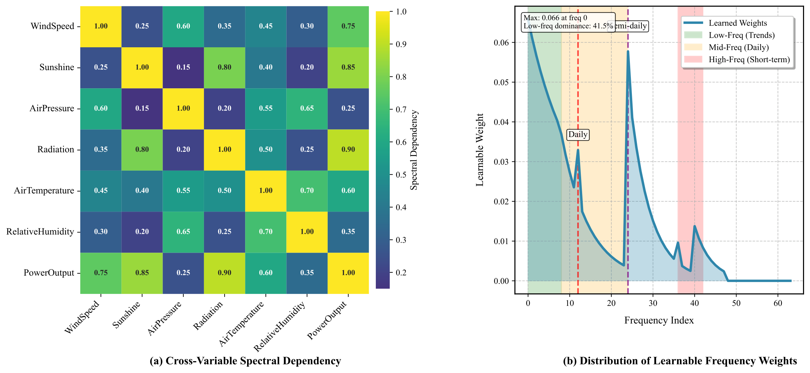
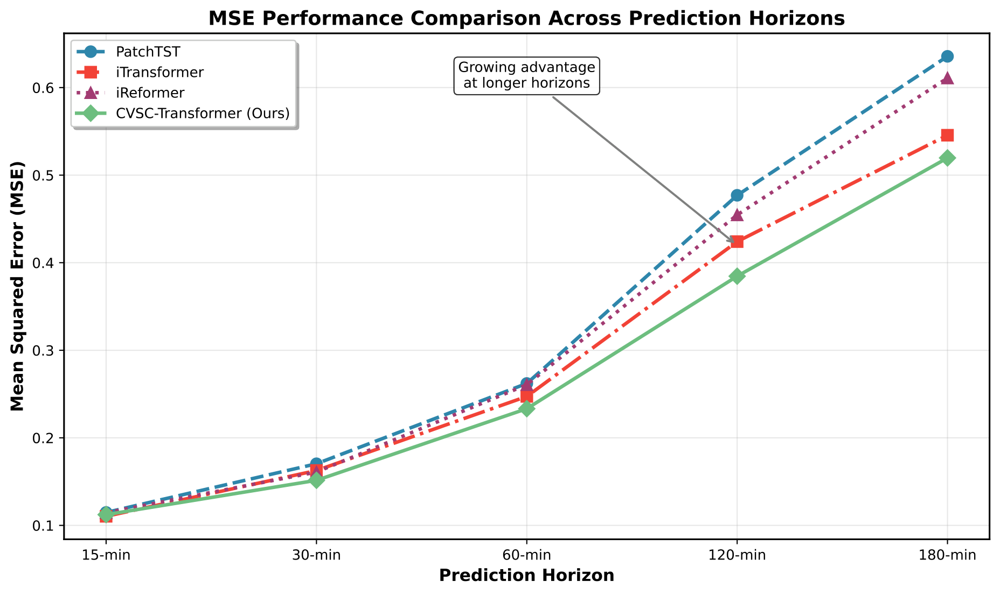

时域关系图

在时域下，多气象变量与功率之间存在明显相位错位和幅值差异，变量关系并不容易被直接显式捕捉。
从建模动机、实验条件、多数据集结果、季节鲁棒性、消融实验和部署代价六个方面说明方法为什么有效、为什么可信。

在时域下，多气象变量与功率之间存在明显相位错位和幅值差异，变量关系并不容易被直接显式捕捉。

进入频域后，关键周期上的同步峰值更清晰，跨变量谱相干关系更容易被建模和解释。
重点观察短时跟踪、局部突降后的恢复，以及模型对滚动修正场景的适配能力。
重点观察误差带如何扩张，以及模型是否仍能提供小时级调度预备所需的稳定趋势。
重点观察中期趋势保持能力，验证频域结构是否比单纯时域跟踪更适合较长前瞻窗口。
这里的“预测时长”表示预测前瞻窗口，而不是输入窗口长度。
模型对比条件会随前瞻窗口改变，但不会随场景切换而改变。
周期结构清晰、辐照变化平滑，适合观察模型对日周期与半日周期的捕捉效果。
短时场景跟踪性强，适合用于滚动修正。
该模块对应论文中 Dataset0 的多时长 MSE 对比表，只随前瞻窗口变化，不随天气场景切换变化。


从当前结果可以看出，移除跨变量谱相干建模后的退化最显著，说明它是模型精度提升的核心来源；移除频率权重后退化幅度较小但持续存在，说明自适应频带选择对稳定增益同样重要。
Ours 的参数量为 7.72M、FLOPs 为 0.167G、推理时延为 4.018ms。虽然复杂度略高于极轻量的基线，但仍处于站端可部署范围，换来的是更稳定的中长期预测表现和更好的高波动场景鲁棒性。
预测窗口越长，瞬时扰动越难直接追踪，稳定周期结构越重要，而频域建模更擅长保住这种结构。
如果只保留单一实值表示，会损失变量之间的相位对齐信息，进而影响波峰波谷和天气变化的时间定位。
因为它不仅在多数据集和高波动工业场景上取得较优结果，同时推理时延和复杂度仍处于可部署范围。